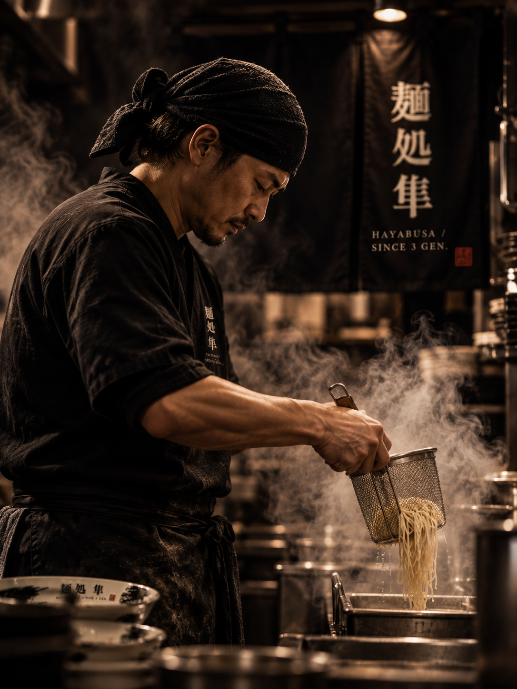
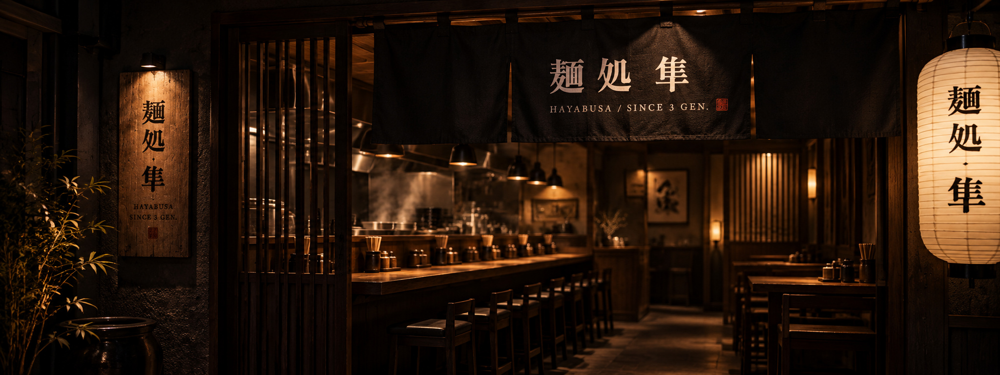

祖父が屋台からはじめた一杯を、父が受け継ぎ、そして三代目である私がこの暖簾を守っています。

修行時代に学んだのは「素材に嘘をつくな」という一言でした。
以来20年、スープと麺だけは絶対に妥協せず、毎日同じ手順で仕込み続けています。
祖父が下町の屋台で一杯を売りはじめた。ここが暖簾のはじまりです。
父が味を受け継ぎ、この場所に店を構えた。鶏白湯を看板に据えました。
スープと麺の手順を変えず、20年。今日も同じ時間に仕込みをはじめます。
